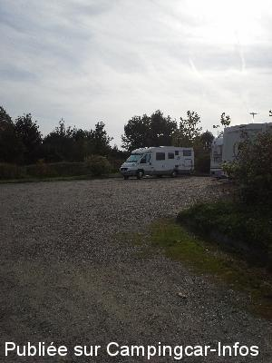
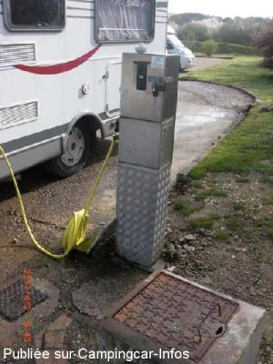
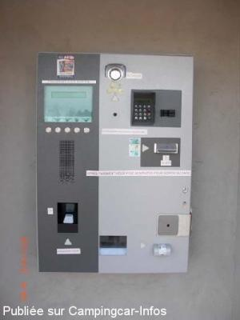
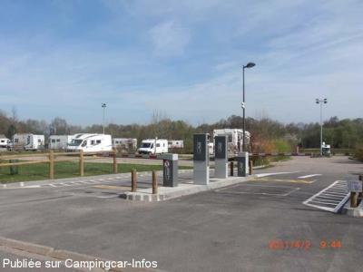
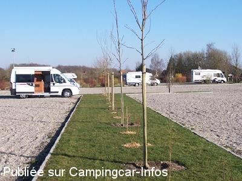

ASN = Aire de services avec stationnement nuit possible de :
SAINT VALÉRY SUR SOMME
(N° 725)
Accès/adresse :
Rue de la Croix l'Abbé
80230 SAINT VALÉRY SUR SOMME
80230 SAINT VALÉRY SUR SOMME
Latitude : (Nord) 50.18223° Décimaux ou 50° 10′ 56′′
Longitude : (Est) 1.62889° Décimaux ou 1° 37′ 44′′
Tarif : 2015
Services, stationnement :
1 h : 2,50 €
2 h : 4,50 €
3 h : 5 €
Heure suivante : 1 €
8 à 24 heures : 10 €
Paiement par horodateur, contrôlé par la police municipale
Type de borne : Artisanale
Services :


Autres informations :
100 emplacements avec barrières à l'entrée
Tel Office du Tourisme + 33 (0)322 609 350
ou Police Municipale + 33 (0)624 691 204
http://www.saint-valery-sur-somme.fr

Le 25/10/2014 par flotdelarance

Le 03/04/2011 par cfgdmx

Le 03/04/2011 par cfgdmx

Le 03/04/2011 par cfgdmx

Le 10/03/2011 par Horst
de
chantal vautrin
le 04/01/2016 :
Très bel air spacieux agréable mais 10 € les 24 heures c est trop cher sans courant dommage....
Très bel air spacieux agréable mais 10 € les 24 heures c est trop cher sans courant dommage....
de
jeboss
le 15/11/2015 :
y avons passé une nuit. Bon calme et pas de soucis, terrain légèrement en pente et dans le bas bcp d'eau par temps de pluie. Sinon oui 10euros pour peu de services. Mais bon tout va bien, à 10 à pied du centre ville. Belle balade.
y avons passé une nuit. Bon calme et pas de soucis, terrain légèrement en pente et dans le bas bcp d'eau par temps de pluie. Sinon oui 10euros pour peu de services. Mais bon tout va bien, à 10 à pied du centre ville. Belle balade.
de
guy lefevre
le 11/11/2015 :
Trés belle air à15minutes à pied du centre ville dommage pour le prix 10€ les 24h il devrait avoir de l'èlectricité sinon nuit calme
Trés belle air à15minutes à pied du centre ville dommage pour le prix 10€ les 24h il devrait avoir de l'èlectricité sinon nuit calme
de
J P Bedouet
le 24/06/2015 :
Aire vaste et agréable, même si certains emplacements sont un peu en pente. Tout fonctionnait correctement. Nous y avons passé 2 nuits très calmes.
Aire vaste et agréable, même si certains emplacements sont un peu en pente. Tout fonctionnait correctement. Nous y avons passé 2 nuits très calmes.
de
lesflotsdelarance
le 25/10/2014 :
de passage début octobre 14, aire propre et grande, paiement par carte bleue en panne, dommage,cela semble être souvent.sinon rien à dire un peu de marche pour aller dans le centre mais je conseille endroit calme.
de passage début octobre 14, aire propre et grande, paiement par carte bleue en panne, dommage,cela semble être souvent.sinon rien à dire un peu de marche pour aller dans le centre mais je conseille endroit calme.
de
Claude
le 04/08/2014 :
De passage le 27/07/2014, très belle aire de stationnement 10€ (paiement en sortie), service gratuit.
A recommander.
De passage le 27/07/2014, très belle aire de stationnement 10€ (paiement en sortie), service gratuit.
A recommander.
de
Pinecar
le 24/06/2014 :
§ De passage ce weekend. Effectivement aire propre en gravillon et bien entretenue. Ramassage des poubelles à 7h et tarif 10 Euros à l'arrivée au lieu de 9 Euros...
§ De passage ce weekend. Effectivement aire propre en gravillon et bien entretenue. Ramassage des poubelles à 7h et tarif 10 Euros à l'arrivée au lieu de 9 Euros...
de
bubu54
le 22/05/2014 :
Très belle aire proche centre ville.
Très belle aire proche centre ville.
de
Fucik Jean Claude
le 16/10/2013 :
§ De passage le 8/10/13, l'aire est bien située, calme et bien équipée, mais pas d'électricité. Compte tenu de cela, le tarif de 9.00€ parait élevé, d'autant qu'au petit matin, la borne CB était en panne, alors essayez de chercher de la monnaie dans vos affaires alors que 6 CC attendent derrière vous. De plus, n'accepte pas les nouveaux billets de 5.00€ (??)
§ De passage le 8/10/13, l'aire est bien située, calme et bien équipée, mais pas d'électricité. Compte tenu de cela, le tarif de 9.00€ parait élevé, d'autant qu'au petit matin, la borne CB était en panne, alors essayez de chercher de la monnaie dans vos affaires alors que 6 CC attendent derrière vous. De plus, n'accepte pas les nouveaux billets de 5.00€ (??)
de
MD62
le 24/07/2013 :
Aire très agréable, avec des espaces gazonnés et ombragés: appréciables ce week-end du 21 juillet. Certes, à ce tarif on apprécierait quelques possibiltés de branchements mais le site est rès calme: bien situé à deux pas du centre, du port et à quelques coups de pédale d'une des plus belles baies d'Europe.
Aire très agréable, avec des espaces gazonnés et ombragés: appréciables ce week-end du 21 juillet. Certes, à ce tarif on apprécierait quelques possibiltés de branchements mais le site est rès calme: bien situé à deux pas du centre, du port et à quelques coups de pédale d'une des plus belles baies d'Europe.
de
jp
le 21/07/2013 :
de passage les 19-20-21 juillet, avons commis l'erreur de dépasser de 30 mns l'horaire d'arrivée, résultat au lieu de 18 euros, payée 20.30 en espèces la carte bleue étant en panne resultat, descendre en ville chercher des espèces - camping-cariste, le depannage de la carte bleue le we n'est pas prévu dans les procédures municipales
de passage les 19-20-21 juillet, avons commis l'erreur de dépasser de 30 mns l'horaire d'arrivée, résultat au lieu de 18 euros, payée 20.30 en espèces la carte bleue étant en panne resultat, descendre en ville chercher des espèces - camping-cariste, le depannage de la carte bleue le we n'est pas prévu dans les procédures municipales
de
Bignard
le 04/08/2012 :
Effectivement lorsque l'on regarde sur google heart,l'aire se trouve situé près d'une décharge.
A éviter,la municipalité n'a pas compris,surtout à ce prix la.
Effectivement lorsque l'on regarde sur google heart,l'aire se trouve situé près d'une décharge.
A éviter,la municipalité n'a pas compris,surtout à ce prix la.
de
PhilCat 59
le 17/04/2012 :
§- Surprise le week-end des 14 et 15 AVRIL 2012 lors de mon arrêt sur cette aire que je fréquente depuis plusieurs d'années en constatant une nouvelle augmentation du tarif passé à 9 € les 24 H00.- Bilan : Désertification de ce parking; nombre de campings-car s'arrêtent et passent leur chemin. Nous frisons et dépassons même les tarifs appliqués sur certains sites cotés de la méditerranée. Mettant fixé une barre tarifaire à ne pas dépasser compte tenu de la situation géographique du lieu c'était en ce qui me concerne une dernière.-
§- Surprise le week-end des 14 et 15 AVRIL 2012 lors de mon arrêt sur cette aire que je fréquente depuis plusieurs d'années en constatant une nouvelle augmentation du tarif passé à 9 € les 24 H00.- Bilan : Désertification de ce parking; nombre de campings-car s'arrêtent et passent leur chemin. Nous frisons et dépassons même les tarifs appliqués sur certains sites cotés de la méditerranée. Mettant fixé une barre tarifaire à ne pas dépasser compte tenu de la situation géographique du lieu c'était en ce qui me concerne une dernière.-
de
Paul Guntz
le 04/05/2010 :
Aire pratique pour la nuit, mais trop éloignée du centre et du port pour une visite en journée. Mais l'aire de services est conçue en dépit du bon sens. Impossible de centrer les vidanges sur l'égout. Plus grave: on peut brancher un raccord sur le filetage du robinet servant au rinçage des cassettes, ouvrant la voie aux contaminations.
Aire pratique pour la nuit, mais trop éloignée du centre et du port pour une visite en journée. Mais l'aire de services est conçue en dépit du bon sens. Impossible de centrer les vidanges sur l'égout. Plus grave: on peut brancher un raccord sur le filetage du robinet servant au rinçage des cassettes, ouvrant la voie aux contaminations.